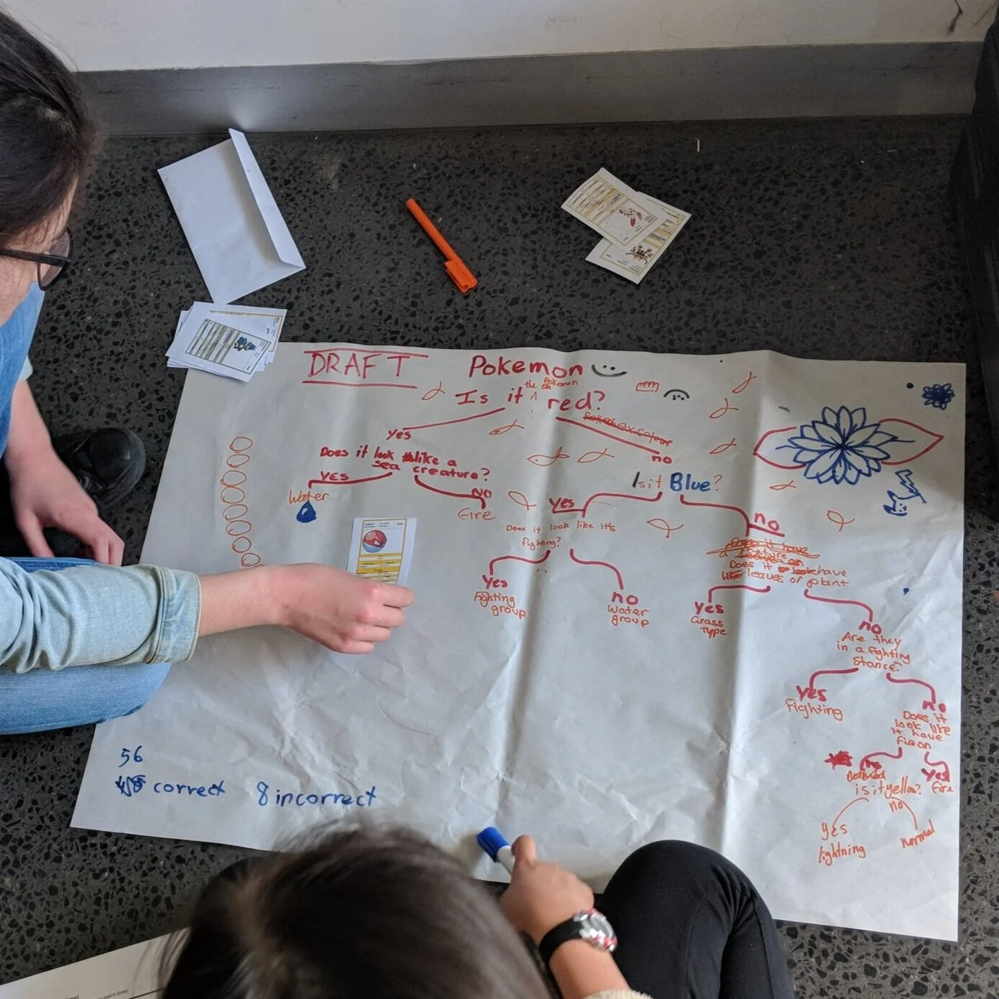
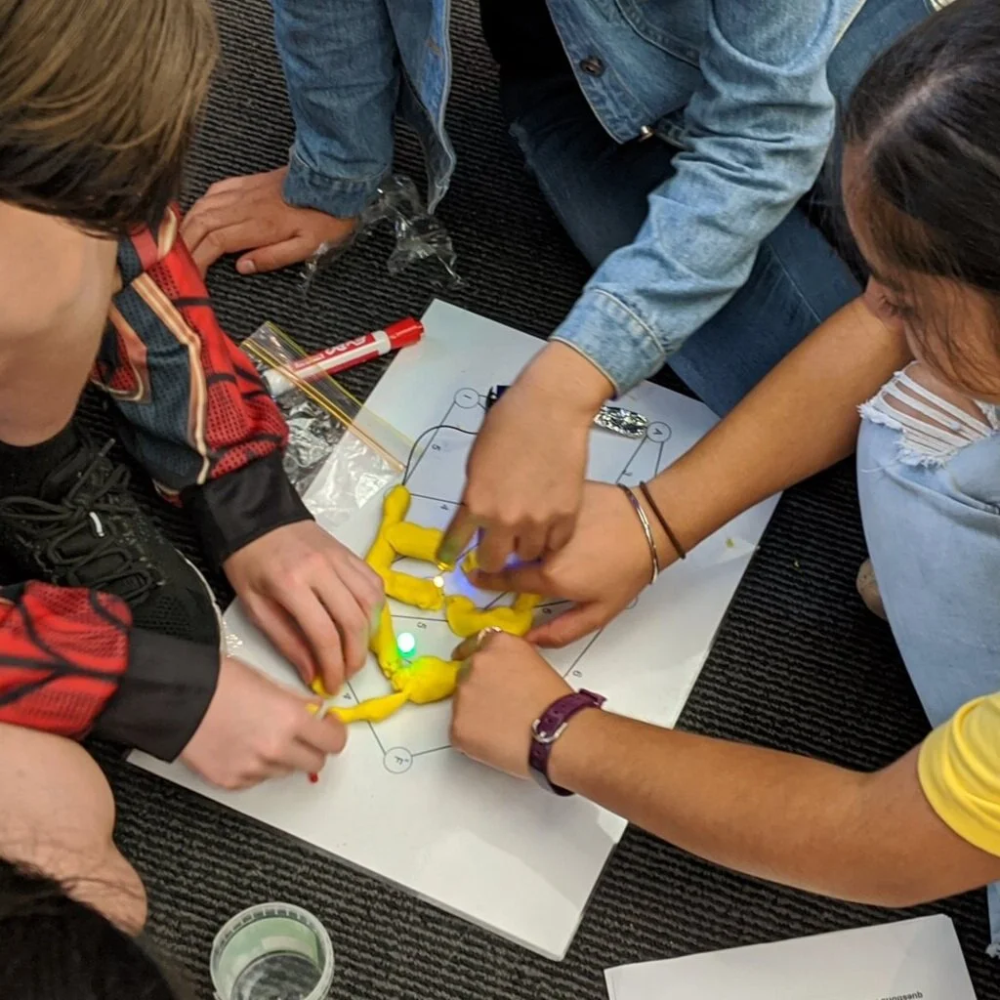
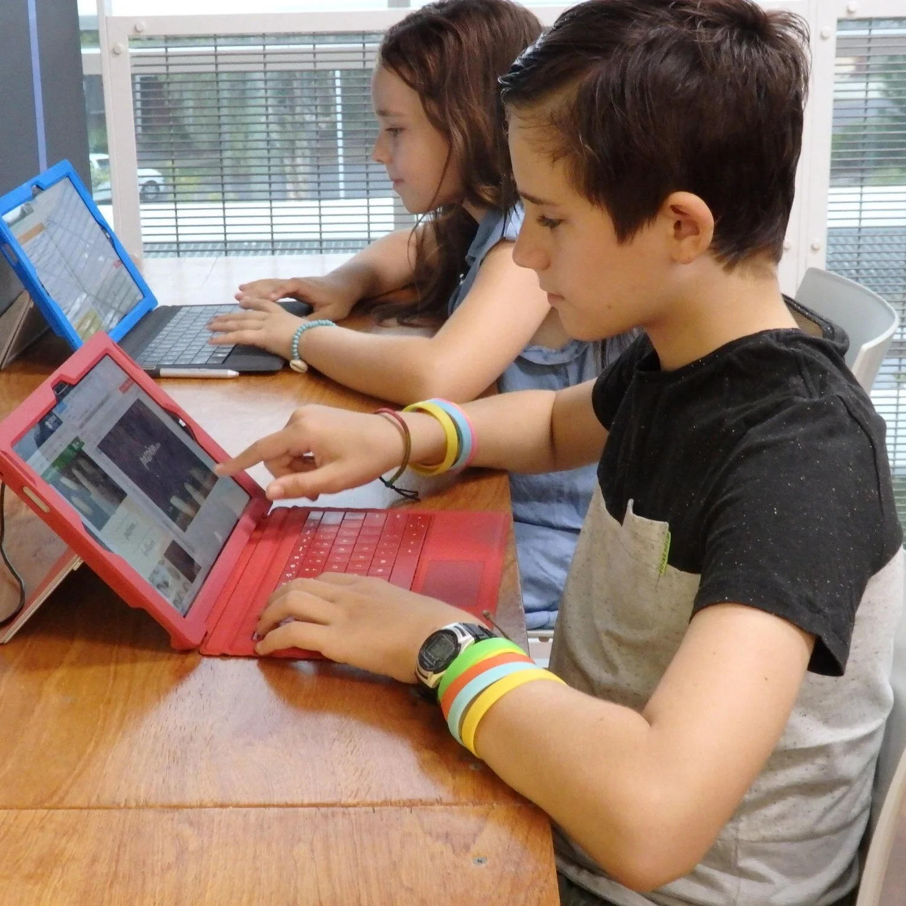

Making hands-on STEM projects and experiences accessible to students and teachers, that show what you can unlock with technology.
By working with teachers, parents and students we aim to inspire kids into STEM careers with engaging content, incursion opportunities, and extra curricular experiences.
The potential you unlock when you learn to code is limitless, but there's much more to tech than code.
Our mission is to inspire students to engage with coding by teaching them more than just the syntax. By connecting students with context we not only show them how they can change the world with code in more ways than they thought, but also make concepts easier to understand.

In communities of peers and mentors it's easy to feel at home, and see your future in tech.
It's our goal to give students and teachers access to communities that inspire and support them. Through workshops, clubs and online communities we aim to create long lasting networks that help people connect with each other, STEM industries and us at ConnectEd Code!

New curriculums bring lots of work for teachers. With our curriculum mapped content we're here to help.
Whether you're a lifelong tech teacher, new to teaching coding, or teaching your kids at home it can be difficult to create engaging content that covers the curriculum. With our differentiated project-based content, and incursions we give each student an accessible challenge, while covering key concepts.
